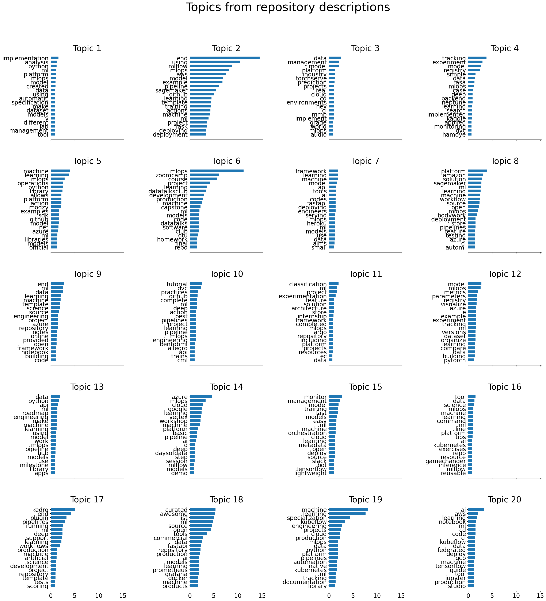
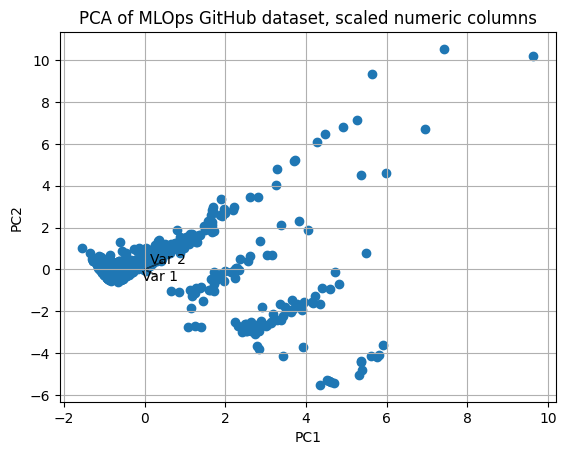
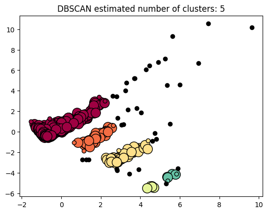

import pandas as pd
from siuba import *
from siuba.siu import call
from plotnine import *
import json
import matplotlib.pyplot as pp
import tidytext
import numpy as np
from sklearn.decomposition import PCA
from sklearn.preprocessing import StandardScaler
import string
import random
import nltk
from nltk import FreqDist
from nltk import ngrams
from nltk.tokenize import RegexpTokenizer
from sklearn.feature_extraction.text import TfidfVectorizer
from sklearn.decomposition import LatentDirichletAllocation
np.random.seed(500)LDA
import pins
board = pins.board_folder(".")
numeric_df = board.pin_read("train_data")numeric_df.drop(columns=["allow_forking"], inplace=True)
nonone = (numeric_df
>> select(_.description)
>> filter(-_.description.isin([None])))import re
def remove_emojis(data):
emoj = re.compile('[^a-zA-Z]', re.UNICODE)
return re.sub(emoj, ' ', data)
# pattern = re.compile('[^A-z0-9 ]+')
# def clean_text(string):
# return pattern.search('', string)
from sklearn.feature_extraction import text
stop_words = text.ENGLISH_STOP_WORDS.union(frozenset({'b', 's'}))tokenizer = RegexpTokenizer(r'\w+')
sents = nonone.description.to_list()
regex_sents = []
for sent in sents:
regex_sents.append(remove_emojis(sent))
# clean_text(sent)
# Vectorize document using TF-IDF
tfidf = TfidfVectorizer(lowercase=True,
stop_words=stop_words,
ngram_range = (1,1),
tokenizer = tokenizer.tokenize)
# Fit and Transform the documents
train_data = tfidf.fit_transform(regex_sents) # visualize topics
import matplotlib.pyplot as plt
def plot_top_words(model, feature_names, n_top_words, title):
fig, axes = plt.subplots(5, 4, figsize=(30, 30), sharex=True)
axes = axes.flatten()
for topic_idx, topic in enumerate(model.components_):
top_features_ind = topic.argsort()[: -n_top_words - 1 : -1]
top_features = [feature_names[i] for i in top_features_ind]
weights = topic[top_features_ind]
ax = axes[topic_idx]
ax.barh(top_features, weights, height=0.7)
ax.set_title(f"Topic {topic_idx +1}", fontdict={"fontsize": 28})
ax.invert_yaxis()
ax.tick_params(axis="both", which="major", labelsize=20)
for i in "top right left".split():
ax.spines[i].set_visible(False)
fig.suptitle(title, fontsize=40)
plt.subplots_adjust(top=0.90, bottom=0.05, wspace=0.90, hspace=0.3)
plt.show()# https://stackoverflow.com/questions/47370795/pca-on-sklearn-how-to-interpret-pca-components
# good PCA refresher https://towardsdatascience.com/pca-clearly-explained-how-when-why-to-use-it-and-feature-importance-a-guide-in-python-7c274582c37e
def pca_plot(transformed_data, components):
x = transformed_data[:, 0]
y = transformed_data[:, 1]
n = components.shape[0]
plt.scatter(x, y)
plt.xlabel("PC{}".format(1))
plt.ylabel("PC{}".format(2))
plt.grid()
for i in range(n):
plt.arrow(0, 0, components[i, 0], components[i, 1], color="black", alpha=0.5)
plt.text(
components[i, 0] * 1.3,
components[i, 1] * 1.3,
"Var " + str(i + 1),
color="black",
ha="center",
va="center",
)
def most_important_feature(components, data):
most_important = [np.abs(components[i]).argmax() for i in range(components.shape[0])]
initial_feature_names = data.columns
most_important_names = [initial_feature_names[most_important[i]] for i in range(components.shape[0])]
dic = {'PC{}'.format(i): most_important_names[i] for i in range(components.shape[0])}
return pd.DataFrame(dic.items())# model_05=LatentDirichletAllocation(n_components=5)
# get_topics(model_05, tfidf, train_data)# model_10=LatentDirichletAllocation(n_components=10)
# get_topics(model_10, tfidf, train_data)# model_12=LatentDirichletAllocation(n_components=12)
# get_topics(model_12, tfidf, train_data)def get_topics(lda_model, tfidf_model, data):
terms = tfidf_model.get_feature_names_out()
# Fit and Transform SVD model on data
lda_matrix = lda_model.fit_transform(data)
lda_components = lda_model.components_
for index, component in enumerate(lda_components):
zipped = zip(terms, component)
top_terms_key=sorted(zipped, key = lambda t: t[1], reverse=True)[:7]
top_terms_list=list(dict(top_terms_key).keys())
print("Topic "+str(index)+": ",top_terms_list)
return lda_matrix, lda_componentsmodel_20=LatentDirichletAllocation(n_components=20)
matrix, components = get_topics(model_20, tfidf, train_data)Topic 0: ['implementation', 'analysis', 'python', 'ml', 'platform', 'mlops', 'model']
Topic 1: ['end', 'using', 'mlflow', 'mlops', 'aws', 'model', 'example']
Topic 2: ['data', 'management', 'model', 'platform', 'industry', 'torchserve', 'prediction']
Topic 3: ['tracking', 'experiment', 'model', 'registry', 'simple', 'data', 'rasa']
Topic 4: ['machine', 'learning', 'mlops', 'operations', 'python', 'library', 'allows']
Topic 5: ['mlops', 'zoomcamp', 'course', 'project', 'learning', 'datatalksclub', 'development']
Topic 6: ['framework', 'learning', 'machine', 'model', 'api', 'tools', 'ai']
Topic 7: ['platform', 'amazon', 'solution', 'sagemaker', 'ml', 'learning', 'machine']
Topic 8: ['end', 'ml', 'data', 'learning', 'machine', 'template', 'science']
Topic 9: ['tutorial', 'dvc', 'practices', 'github', 'complete', 'ml', 'deep']
Topic 10: ['classification', 'ml', 'project', 'experimentation', 'feature', 'solution', 'architecture']
Topic 11: ['model', 'mlops', 'metrics', 'parameters', 'registry', 'visualize', 'azure']
Topic 12: ['data', 'python', 'api', 'ml', 'roadmap', 'engineering', 'make']
Topic 13: ['azure', 'mlops', 'cloud', 'google', 'learning', 'vertex', 'workshop']
Topic 14: ['monitor', 'management', 'model', 'training', 'fast', 'models', 'easy']
Topic 15: ['tool', 'data', 'science', 'mlops', 'machine', 'learning', 'command']
Topic 16: ['kedro', 'end', 'plugin', 'pipelines', 'running', 'ml', 'deep']
Topic 17: ['curated', 'awesome', 'list', 'ml', 'source', 'open', 'tools']
Topic 18: ['machine', 'learning', 'specialization', 'kubeflow', 'engineering', 'projects', 'cloud']
Topic 19: ['ai', 'aws', 'learning', 'notebook', 'ml', 'cd', 'code']# add topic to dataframe
topic = []
for n in range(matrix.shape[0]):
topic.append(matrix[n].argmax())
numeric_df["lda_topic"] = topictfidf.get_feature_names_out()array(['aalto', 'abalone', 'ability', ..., 'zo', 'zokyo', 'zoomcamp'],
dtype=object)## rerun with grid of different numbers of topics + document
plot_top_words(model_20, tfidf.get_feature_names_out(), 20, "Topics from repository descriptions")
numeric_df.drop(columns=['description'], inplace=True)Scaled PCA
from sklearn import preprocessing
le = preprocessing.LabelEncoder().fit_transform(numeric_df['lda_topic'])
scaled_numeric_df = StandardScaler().fit_transform(numeric_df)
pca_numeric_scaled = PCA(n_components=2).fit(scaled_numeric_df)
pca_numeric_scaled_output = pca_numeric_scaled.transform(scaled_numeric_df)from sklearn.pipeline import Pipeline
# from sklearn.cluster import DBSCAN
# pipe = Pipeline(
# [("le", preprocessing.LabelEncoder()),
# ("scaler", StandardScaler()),
# ("pca", PCA()),
# ("dbscan", DBSCAN())]
# )# pipe.fit(numeric_df)plt.title("PCA of MLOps GitHub dataset, scaled numeric columns")
pca_plot(pca_numeric_scaled_output, pca_numeric_scaled.components_)
plt.show()
DBSCAN
import numpy as np
from sklearn.cluster import DBSCAN
from sklearn import metrics
db = DBSCAN(eps = 0.5, min_samples=5).fit(pca_numeric_scaled_output)
labels = db.labels_
# Number of clusters in labels, ignoring noise if present.
n_clusters_ = len(set(labels)) - (1 if -1 in labels else 0)
n_noise_ = list(labels).count(-1)
print("Estimated number of clusters: %d" % n_clusters_)
print("Estimated number of noise points: %d" % n_noise_)Estimated number of clusters: 5
Estimated number of noise points: 35unique_labels = set(labels)
core_samples_mask = np.zeros_like(labels, dtype=bool)
core_samples_mask[db.core_sample_indices_] = True
colors = [plt.cm.Spectral(each) for each in np.linspace(0, 1, len(unique_labels))]
for k, col in zip(unique_labels, colors):
if k == -1:
# Black used for noise.
col = [0, 0, 0, 1]
class_member_mask = labels == k
xy = pca_numeric_scaled_output[class_member_mask & core_samples_mask]
plt.plot(
xy[:, 0],
xy[:, 1],
"o",
markerfacecolor=tuple(col),
markeredgecolor="k",
markersize=14,
)
xy = pca_numeric_scaled_output[class_member_mask & ~core_samples_mask]
plt.plot(
xy[:, 0],
xy[:, 1],
"o",
markerfacecolor=tuple(col),
markeredgecolor="k",
markersize=6,
)
plt.title(f"DBSCAN estimated number of clusters: {n_clusters_}")
plt.show()
core_samples_maskarray([False, False, False, False, False, True, False, False, False,
True, False, False, False, False, True, False, False, False,
True, True, False, True, True, False, True, False, False,
True, True, True, False, True, True, True, True, True,
True, False, False, True, False, True, True, True, True,
True, True, False, True, True, True, True, True, True,
True, True, True, True, False, True, True, True, True,
True, True, True, False, True, True, False, True, True,
True, True, True, True, True, True, True, True, True,
False, True, True, True, True, True, True, True, True,
True, True, True, True, True, True, True, False, True,
True, True, True, True, True, True, True, True, True,
True, True, True, True, True, True, True, True, True,
True, True, True, True, True, True, True, True, True,
True, False, True, True, True, True, True, True, True,
True, True, True, True, True, True, True, True, True,
True, False, True, True, True, True, True, True, True,
True, True, True, False, True, True, True, True, True,
True, True, True, True, True, True, True, True, True,
True, True, True, True, True, True, True, True, True,
True, True, True, True, True, True, True, True, True,
True, True, True, True, True, True, False, True, True,
True, True, True, True, True, True, True, True, True,
True, True, True, True, True, True, True, True, True,
True, True, True, True, True, True, True, True, True,
True, True, True, True, True, True, True, True, True,
True, True, True, True, True, True, True, True, True,
True, True, True, True, True, True, True, True, True,
True, True, True, True, True, True, True, True, True,
True, True, True, True, True, True, True, True, True,
True, True, True, True, True, True, True, True, True,
True, True, True, True, True, False, False, True, True,
True, True, True, True, True, True, True, True, True,
True, True, True, True, True, True, True, True, False,
True, True, True, True, True, True, True, True, True,
False, True, True, True, True, True, True, True, True,
True, True, True, True, True, True, True, True, True,
True, True, True, True, True, True, True, True, True,
True, True, True, True, True, True, True, True, False,
True, True, True, True, True, True, True, True, True,
True, True, True, True, True, True, True, True, True,
True, True, True, True, True, True, True, True, True,
True, True, True, True, True, True, True, True, True,
True, True, True, True, True, True, True, True, True,
True, True, True, True, True, True, True, True, True,
True, True, True, True, True, True, True, True, True,
True, True, True, True, True, True, True, True, True,
True, True, True, True, True, True, True, True, True,
True, True, True, True, True, True, True, True, True,
True, True, True, True, False, True, True, True, True,
True, True, True, True, True, True, True, True, True,
True, True, True, True, True, True, True, True, True,
True, True, True, True, True, True, True, True, True,
True, True, True, True, True, True, True, True, True,
False, True, True, True, True, True, True, True, True,
True, True, True, True, True, True, True, True, True,
True, True, True, True, True, True, True, True, True,
True, True, True, True, True, True, True, True, True,
True, True, True, True, True, True, True, True, True,
True, True, True, True, True, True, False, True, True,
True, True, True, True, True, True, True, True, True,
True, True, True, True, True, True, False, True, True,
True, True, True, True, True, True, True, True, True,
True, True, True, True, True, True, True, True, True,
True, True, True, True, True, True, True, True, True,
True, True, True, True, True, True, True, True, True,
True, True, True, True, True, True, True, True, True,
True, True, True, True, True, True, True, True, True,
True, True, True, True, True, True, True, True, True,
True, True, True, True, True, True, True, True, True,
True, True, True, True, True, True, True, True, True,
True, True, True, True, True, True, True, True, True,
True, True, True, True, True, True, True, True, True,
True, True, True, True, True, True, True, True, True,
True, True, True, True, True, True, True, True, True,
True, True, True, True, True, True, True, True, True,
True, True, True, True, True, True, True, True, True,
True, True, True, True, True, True, True, True, True,
True, True, True, True, True, True, True, True, True,
True, True, False, False, True, True, True, True, True,
True, True, True, True, True, True, True, True, False,
True, True, True, True, True, True, True, True, True,
True, True, True, True, True, True, True, True, True,
True, True, True, True, True, True, True, True, True,
True, True, True, True, True, True, True, True, True,
True, True, True, True, True, True, True, True, True,
True, True, True, True, True, True, True, True, True,
True, True, True, True, True, True, True, True, True,
True, True, True, True, True, True, True, True, True,
True, True, True, True, True, True, True, True, True,
True, True, True, True, True, True, True, True, True,
True, True, True, True, True, True, True, True, True,
True, True, True, True, True, True, True, True, True,
True, True, True, True, True, True, True, True, True,
True, True, True, True, True, True, True, True, True,
True, True, True, True, True, True, False, True, True,
True, True, True, True, True, True, True, True, True,
True, True, True, True, True, True, True, True, True,
True, True, True, True, True, True, True, True, True,
True, True, True, True, True, True, True, True, True,
True, True, True, True, True, True, True, True, True,
True, True, True, True, True, True, True, True, True,
True, True, True, True, True, True, True, True, True,
True, True, True, True, True, True, True, True, True,
True, True, True, True, True, True, True, True, True,
True, True, True, True])numeric_df['clustering_labels'] = db.fit_predict(pca_numeric_scaled_output)from sklearn import metrics
metrics.silhouette_score(pca_numeric_scaled_output, numeric_df['clustering_labels'])0.6171555594386241doesn’t have overlapping clusters or mislabeled data points.
numeric_df.columnsIndex(['stargazers_count', 'has_issues', 'has_projects', 'has_downloads',
'has_wiki', 'has_pages', 'has_discussions', 'open_issues_count',
'is_template', 'age_days', 'time_since_last_commit_days', 'lda_topic',
'clustering_labels'],
dtype='object')(numeric_df
>> group_by(_.clustering_labels)
>> summarize(
avg_stars = _.stargazers_count.mean(),
avg_has_issues = _.has_issues.mean(),
avg_has_projects = _.has_projects.mean(),
avg_has_downloads = _.has_downloads.mean(),
avg_has_wiki = _.has_wiki.mean(),
avg_has_pages = _.has_pages.mean(),
avg_has_discussions = _.has_discussions.mean(),
avg_open_issues_count = _.open_issues_count.mean(),
avg_is_template = _.is_template.mean(),
avg_age_days = _.age_days.mean(),
avg_last_commit = _.time_since_last_commit_days.mean(),
most_lda_topic = _.lda_topic.mode()[0] + 1
)
)| clustering_labels | avg_stars | avg_has_issues | avg_has_projects | avg_has_downloads | avg_has_wiki | avg_has_pages | avg_has_discussions | avg_open_issues_count | avg_is_template | avg_age_days | avg_last_commit | most_lda_topic | |
|---|---|---|---|---|---|---|---|---|---|---|---|---|---|
| 0 | -1 | 4891.057143 | 0.742857 | 0.771429 | 1.000000 | 0.485714 | 0.314286 | 0.514286 | 255.685714 | 0.028571 | 1215.228571 | 32.085714 | 18 |
| 1 | 0 | 125.140948 | 1.000000 | 1.000000 | 1.000000 | 1.000000 | 0.109356 | 0.094775 | 6.257594 | 0.031592 | 533.911300 | 256.284326 | 2 |
| 2 | 1 | 242.562500 | 1.000000 | 0.906250 | 1.000000 | 0.093750 | 0.312500 | 0.312500 | 23.781250 | 0.062500 | 489.625000 | 107.781250 | 8 |
| 3 | 2 | 85.085106 | 1.000000 | 0.021277 | 0.978723 | 0.000000 | 0.170213 | 0.212766 | 8.255319 | 0.021277 | 586.659574 | 117.106383 | 17 |
| 4 | 3 | 52.166667 | 0.000000 | 0.000000 | 1.000000 | 0.000000 | 0.000000 | 0.000000 | 0.000000 | 0.000000 | 239.333333 | 147.666667 | 2 |
| 5 | 4 | 47.833333 | 0.000000 | 0.000000 | 1.000000 | 0.000000 | 0.166667 | 0.000000 | 8.666667 | 0.000000 | 1483.833333 | 8.333333 | 10 |
(numeric_df
>> count(_.lda_topic)
>> arrange(-_.n))| lda_topic | n | |
|---|---|---|
| 1 | 1 | 107 |
| 5 | 5 | 69 |
| 17 | 17 | 69 |
| 18 | 18 | 63 |
| 8 | 8 | 53 |
| 16 | 16 | 50 |
| 11 | 11 | 49 |
| 19 | 19 | 49 |
| 7 | 7 | 47 |
| 4 | 4 | 45 |
| 6 | 6 | 41 |
| 0 | 0 | 37 |
| 2 | 2 | 37 |
| 9 | 9 | 37 |
| 13 | 13 | 37 |
| 12 | 12 | 35 |
| 10 | 10 | 33 |
| 3 | 3 | 32 |
| 15 | 15 | 30 |
| 14 | 14 | 29 |